泰国珍寺修行 南へ、いよいよ最終ステージへと向かう。
最終修行の地はパンガー。
タイ南部のマレー半島の西海岸、アンダマン海に半島状に突き出ている島がプーケット。
で、その根元がパンガー県、という位置関係ね。
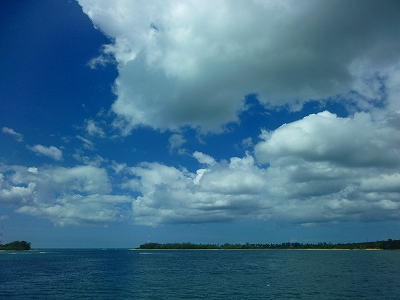
プーケット島と本土側のパンガー県は橋で結ばれており、プーケットでチャーターした車に乗り、ウトウトしてたらいつの間にパンガー県に入っていたよ。
パンガーでは実に不思議な光景をあちこちで見た。
平地なのに突然、ソコだけが何の前触れもなくドカーンと山が隆起しているのだ。
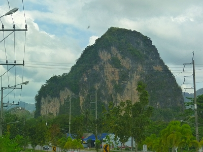
まるで巨大な盆石を見ているような気分になる。
そんな石灰石の岩山のひとつにワットスアンクアなる寺がある。
車から降りたらそこは猿！猿！猿！の猿まみれ。
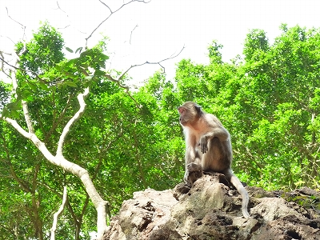
たくさんの猿が縦横無尽に飛び交っている。しかもタチ悪め。
参拝客からモノを奪ったり、猿同士で食べ物を奪い合ったり…まさにファンキーモンキー阿修羅界。
そんな中、功徳じゃ功徳じゃ～、とばかりに食べ物をぶちまけるおっさん。何故か猿にお金を渡すおばさん。
アホ面してポテチを略奪されて泣いてるガキンチョ。
人間の方も少しタガがはずれてるっぽい一種異様なムードでした…
荷物を取られないように気をつけながら先に進むと…
 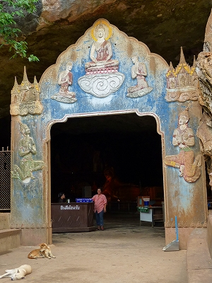
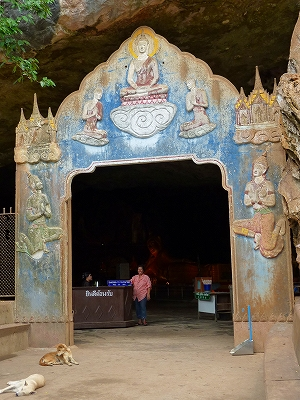絶壁の一部に穴が開いており、そこに入口がある。
そう、ここは洞窟寺院なのだ。
入口に犬が転がっているが猿に襲撃された訳ではなく、単なるお昼寝。
ちなみにタイに限らず東南アジア全般において犬といえばだらしなく道端に転がっているのがデフォルト状態。
暑いの弱いんでしょうねえ。
で、内部。
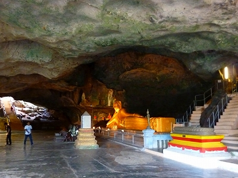
狭い入口からは想像出来ないほどの大空間が広がっている。
入って右手には大きな寝釈迦像が横たわっている。
やけにリアルなお坊さんの像や
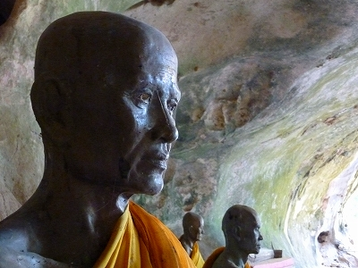
台座がお菓子みたいにカラフルな仏像群
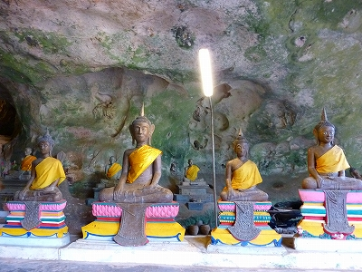
ウエディングケーキみたいな仏塔
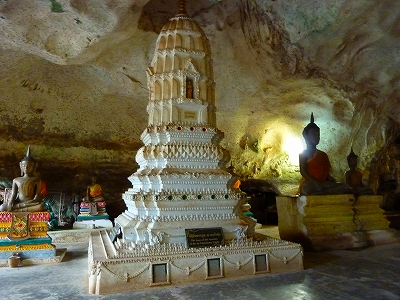
などなど素敵な信仰グッズが並んでいる。
さらに涅槃像の裏には階段があって祠が。この辺、ゲームでいえば絶対おいしいアイテムがあるに違いない！的な場所。

立派な祠の中にはおいしいアイテムはなかったが、お坊さんが。
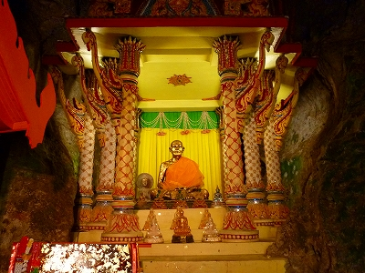
おお、さぞかし名のある高僧なのだろう。全身が金箔で覆われているぞ。
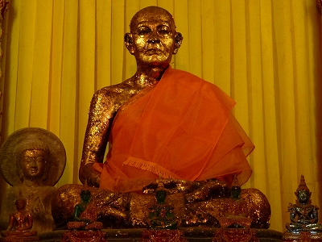
一方片隅には眼鏡のお坊さんも。
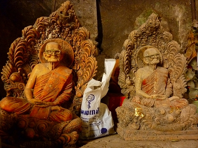
不思議なのが外にアレだけあふれている極悪猿軍団が洞窟内には一切いない事。
コレには幾つかの理由が考えられる。
1.猿は洞窟が苦手。怖いから。
2.猿が入ってこないようにネズミ除け的な高周波の音波を流している。
3.仏様の威徳に恐れおののいて猿もチョット遠慮してる。
4.猿が中に入ろうとすると入り口にいるオバちゃんにぶちのめされる。
5.入口にいたダメ犬が実は超人的、もとい超犬的な活躍で猿を追い払っている。
6.猿に見えるが本当は中に人が入っている。
もちろん本命は3だが4あたりもなくはなさそうで怖い。
話は変るが奈良公園で鹿が売店に置いてある鹿せんべいに手を出さないのって何故だか知ってます？正解は4番！
閑話休題
で、寝釈迦像である。長さは15メートル。
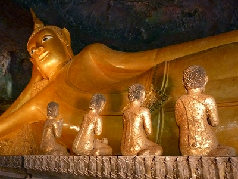
タイではさほど珍しい大きさではないが、洞窟の中に横たわっている姿は中々の眺めだ。
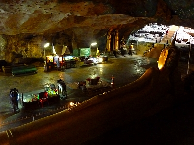
タイの寝釈迦における重要チェックポイント、足の裏。
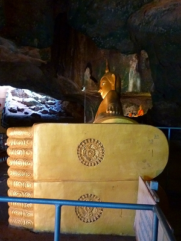
ここのはいわゆるロボットみたいな偏平足だった。実はこれがタイでのスタンダード仏足。
足の裏はタイの仏教において非常に重要な意味を持つ。
私見だが、東アジアに比べて東南アジアで寝釈迦像が数多く見られるのは、実は足の裏を見せたいからではなかろうか。
足の裏が平らでマークが入っているのがお釈迦サマの特徴なのだ。
なのでことさら強調的に足の裏を見せるのだ。
さらにこのような↓仏足跡も信仰の対象となる。
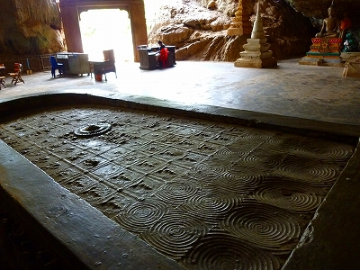
薄暗い洞窟内はひんやりしていて外部の暑さや猿の攻撃など何処吹く風。実に静謐で穏やかな時間が流れている。
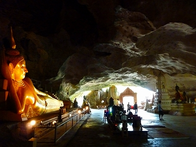
こちらは小さめバージョンの寝釈迦さん。
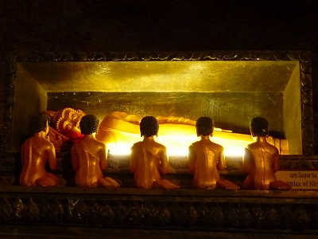
洞窟を進むと入り口とは反対側からも外部に出られる。
つまりこの洞窟自体が巨大な岩山を貫通するトンネルのような状態になっているのだ。
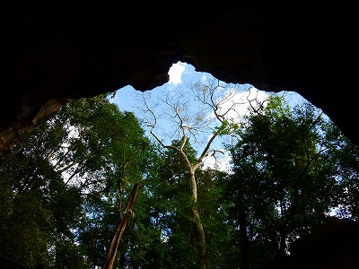
外とはいってもそこは谷底のようなところで、猿もいない。
看板をみると今までいた洞窟がライトケーブ、先にはダークケーブがあるという。よし、行くか。
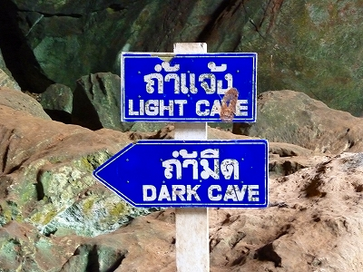
ダークケーブ（暗い洞窟）は文字通り人工的な照明もなく、人の手もあまり入っていない鍾乳洞だった。
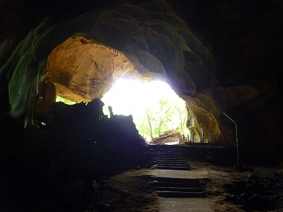
鍾乳石の上に小さな仏塔だけが立っていた。
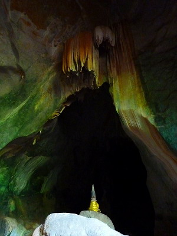 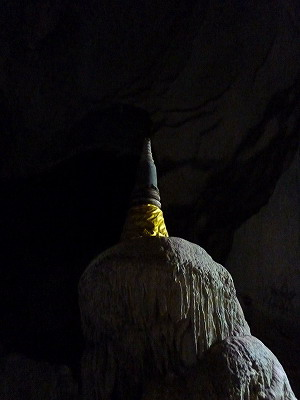
先ほどのライトケーブに比べてこじんまりしていて暗くてしかも行き止まり。
若干のガッカリ感は否めないが、奥の院的な神秘性はむしろこちらの方が強い。
で、先ほどのライトケーブに戻って寝釈迦サマを見下ろす。
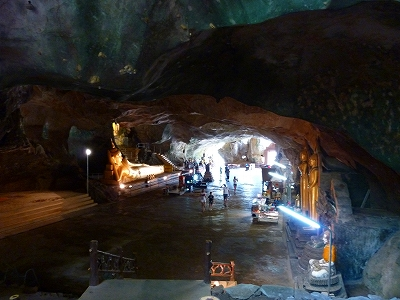
この景色、どこかで見たような気がする。
デジャブというよりも少しリアルな感覚…あ、そっか。
以前訪れたクアラルンプールのバツー洞窟だ！
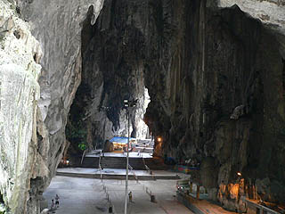
仏教とヒンズー教の違いこそあれど、巨大な洞窟の中を通り抜けて一旦外に出てさらにセカンド洞窟に入る空間構成。
バツー洞窟とほとんど一緒じゃないか。
宗派はともかくバツー洞窟にもキテレツな神像がいっぱいいたっけ。
やっぱりこれだけドラマチックな洞窟があったら宗教的な施設として使ってみたくなるのは古今東西共通なんでしょうなあ。
薄暗い洞窟内で占いマシーンの点滅光がひときわ目立っている。
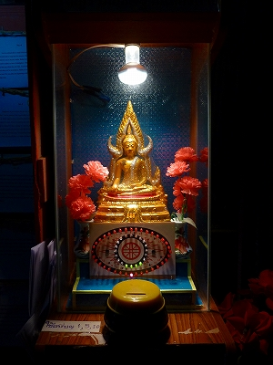
こちら生まれ曜日別の占いマシン。
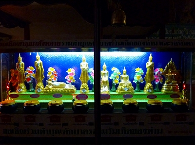
タイやミャンマーでは自分の生まれた曜日を重要視する。日本で言えば干支のようなもの。
それぞれに守り本尊のような仏サマがいて、お寺に行った際もそれぞれの仏像の前にいって参拝するのである。
ちなみにそれぞれの曜日にシンボルカラーもある。
タイの暴動騒ぎを起こした赤シャツ隊はタクシンが日曜生まれなのにちなんで赤いシャツを着ているのだ。
って池上さんが言ってました。
仏像が8体あるのは水曜日だけ何故か昼生まれと夜生まれが分割されているから。
ちなみに私は火曜日生まれなので火曜の守り本尊である寝釈迦さんにコインを投入して占ってみる。
ピロピロピロピロピロピロピロピロピピピ…ピ…ピッ
で、日本のおみくじ同様止まった番号の紙を見て、と。
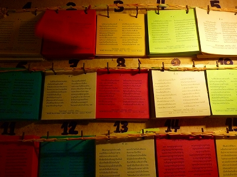
おおお、タイ語だから全然ワカンネー！
次回感動のフィナーレ
泰国珍寺修行 南へ
珍寺大道場 HOME